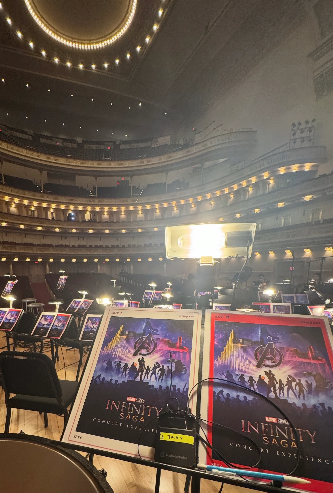

Marvel Infinity Saga
Principal Timpanist
Carnegie Hall
Performance · Production
Professional work spanning orchestral performance, artistic collaboration, production, and the systems that bring music to life.
Practice
Jacky Y. Xu works across both performance and the production systems that support it.
As a percussionist and timpanist, he has contributed to orchestral concerts, international projects, cultural productions, and performances at major New York venues.
His performance experience includes projects such as Marvel Infinity Saga at Carnegie Hall, Voice of Peace featuring Lang Lang, and ongoing work with professional and community-based orchestras.
Behind the scenes, his work has involved music preparation, library operations, percussion technology, production support, and the coordination required to bring professional performances to life.
Selected Experience
On Stage
Principal Timpanist
Carnegie Hall
Percussionist
Performance featuring Lang Lang
Principal Timpanist
International orchestral engagement
Percussionist & Timpanist
Percussionist
Percussionist & Timpanist
Ongoing orchestral engagement
Behind the Scenes
Percussion Staff
Music Librarian
Percussion Technician
Production Staff
Timpani Technician
Percussion Technician
Featured Project

A first-person view from the principal timpani position in Stern Auditorium / Perelman Stage.
The engagement brought together orchestral performance, film music, synchronization, and large-scale concert production within one of New York’s most recognized performance spaces.
From score preparation and instrument setup to rehearsal and performance, the project reflects the precision, adaptability, and collaboration required of a professional orchestral percussionist.
Approach
Every performance is the result of hundreds of decisions, both seen and unseen.
Successful performances depend on more than artistic preparation alone.
They require technical precision, clear communication, practical planning, adaptability, and trust among performers, technicians, administrators, and production teams.
Jacky approaches performance and production as interconnected parts of the same professional practice.
Performance Beyond the Stage
Artistic work begins long before the first note and continues beyond the final sound.